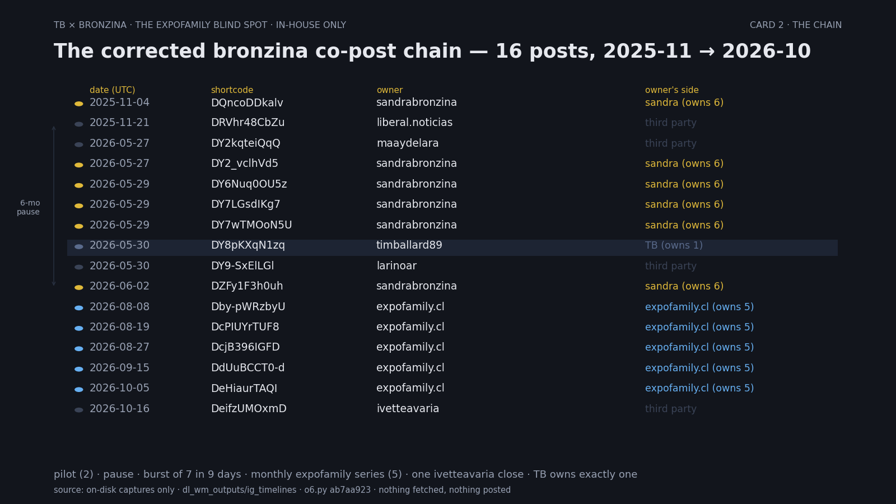
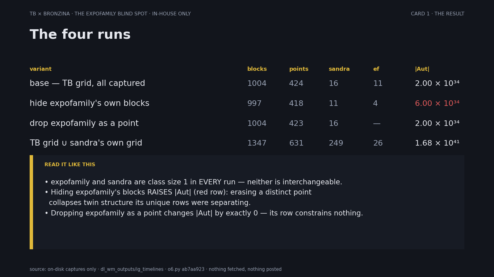
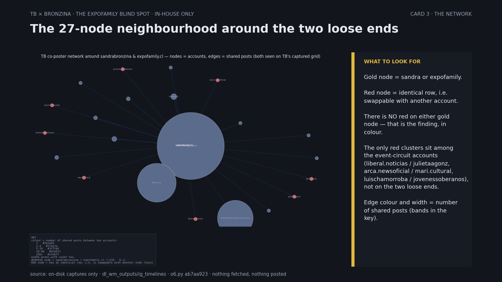

The corrected bronzina chain
sandrabronzina and expofamily.cl in the TB co-poster object · computed from captures already on disk, nothing new fetched
One line: Both are singleton rows — never swappable — so the group order does not depend on either. The blind spot costs row quality, not the answer. Hiding a distinct account's posts makes the object more symmetric (missing blocks manufacture symmetry).
1) The chain
A co-post here is an Instagram post that one account owns and the other is a collaborator on (or both are collaborators). The 17 co-posts between Tim Ballard and sandrabronzina, corrected. TB owns exactly one; sandrabronzina owns six; expofamily.cl owns six (the hub of a Chilean event-circuit cluster); the rest are third-party bridges.

The chain picture shows posts 1–16; #17 (2026-10-20) was found after it was drawn.
| # | date | shortcode | owner | side | sandra | TB |
|---|---|---|---|---|---|---|
| 1 | 2025-11-04 | DQncoDDkalv | sandrabronzina | sandra | owner | collab |
| 2 | 2025-11-21 | DRVhr48CbZu | liberal.noticias | third party | collab | collab |
| 3 | 2026-05-27 | DY2kqteiQqQ | maaydelara | third party | collab | collab |
| 4 | 2026-05-27 | DY2_vclhVd5 | sandrabronzina | sandra | owner | collab |
| 5 | 2026-05-29 | DY6Nuq0OU5z | sandrabronzina | sandra | owner | collab |
| 6 | 2026-05-29 | DY7LGsdIKg7 | sandrabronzina | sandra | owner | collab |
| 7 | 2026-05-29 | DY7wTMOoN5U | sandrabronzina | sandra | owner | collab |
| 8 | 2026-05-30 | DY8pKXqN1zq | timballard89 | TB | collab | owner |
| 9 | 2026-05-30 | DY9-SxElLGl | larinoar | third party | collab | collab |
| 10 | 2026-06-02 | DZFy1F3h0uh | sandrabronzina | sandra | owner | collab |
| 11 | 2026-08-08 | Dby-pWRzbyU | expofamily.cl | expofamily | collab | collab |
| 12 | 2026-08-19 | DcPIUYrTUF8 | expofamily.cl | expofamily | collab | collab |
| 13 | 2026-08-27 | DcjB396IGFD | expofamily.cl | expofamily | collab | collab |
| 14 | 2026-09-15 | DdUuBCCT0-d | expofamily.cl | expofamily | collab | collab |
| 15 | 2026-10-05 | DeHiaurTAQI | expofamily.cl | expofamily | collab | collab |
| 16 | 2026-10-16 | DeifzUMOxmD | ivetteavaria | third party | collab | collab |
| 17 | 2026-10-20 | Deu_C7mTage | expofamily.cl | expofamily | collab | collab |
New, #17 (2026-10-20): expofamily.cl's post of its 17 October event (2nd Expofamily, Parque Araucano), with collaborators sandrabronzina, qntlc, timballard89 and dramariajosemancino. Our scrapers never see expofamily.cl's grid, so this came from the post's own link; fetched 2026-10-22, metadata in Deu_C7mTage_post_metadata.json. Section 2 was computed before it was found and does not include it.
Read: 2 pilot → 6-month pause → burst of 7 in 9 days → monthly expofamily series (5) → ivetteavaria (10-16) → expofamily again four days later (10-20). Sandra's edge to TB is half her own posts, half mediated by the expofamily event circuit.
2) Is either load-bearing?
TB co-poster incidence object. Points = owner ∪ collaborators. Blocks = posts with ≥ 2 points. Holland rows = blocks a point sits in; identical rows are twins; |Aut| = ∏ (size of twin class)!. All on-disk only (o6.py ab7aa923).

| variant | blocks | points | sandra posts | expofamily posts | |Aut| |
|---|---|---|---|---|---|
| base (TB grid, all captured) | 1004 | 424 | 16 | 11 | 2.00 × 10³⁴ |
| hide expofamily's own blocks | 997 | 418 | 11 | 4 | 6.00 × 10³⁴ |
| drop expofamily as a point | 1004 | 423 | 16 | — | 2.00 × 10³⁴ |
| TB grid ∪ sandra's own grid | 1347 | 631 | 249 | 26 | 1.68 × 10⁴¹ |
- Neither is a twin. Class size 1 in every run — sandrabronzina and expofamily.cl are never interchangeable.
- Hiding makes it more symmetric. Removing a distinct point's blocks collapses twin structure its unique rows were separating, raising |Aut| from 2.00e34 to 6.00e34.
- Not load-bearing. Dropping expofamily as a point changes |Aut| by exactly 0. Sandra's row is also unique and her 16 posts are large but distinct.
- The blind spot's cost is quality. expofamily.cl is public (263 posts) but its grid never renders headless; if it lifted, its posts would add blocks. On the same accounts, more blocks can only split twin classes, so |Aut| holds or falls. New accounts arriving with those posts can raise it again, as merging sandra's own grid did (2.00e34 → 1.68e41).
3) The neighbourhood
27-node subgraph around the two loose ends. Gold = sandra/expofamily; red = accounts with an identical row (swappable). No red on the gold nodes.

Data, script and log for this page: data/corrected-bronzina/: REPORT.md, WRITEUP.md, o6.py, run.log, Deu_C7mTage_post_metadata.json, SHA256SUMS. Sources on disk: ~/Desktop/claude/2026-10-22/opencode/tb_object_expofamily/ (WRITEUP.md, REPORT.md, o6.py, run.log), ~/boner_vault/dl_wm_outputs/ig_timelines/, ~/Desktop/claude/2026-10-20/opencode/tb_bronzina/. Nothing new fetched for this page.